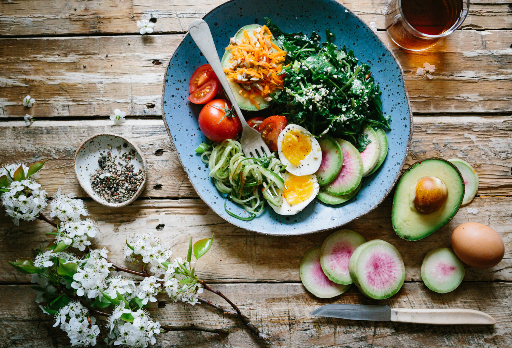

With everyone having their own busy work schedules, few people are unaware that they are starting to neglect their health. Coupled with poor eating habits, the result is you are prone to certain illnesses. Having an inactive lifestyle poses a lot of health risks. So, just before things get worse, it is better to start early. Take the initiative to start and to achieve your health and fitness. Fitness and food form two important parts of a human life which people are ignoring these days.The support of wellbeing and Fitness assists an individual with being in the overall condition of wellbeing and prosperity. It gives the capacity to perform actual activities without being drained or fretful. Be that as it may, the support of wellbeing and Fitness requires customary actual exercise with the adjusted eating regimen. It is extremely fundamental for all to keep up with their wellbeing and Fitness to be fit, solid, courageous of infections, and get such countless different advantages. That’s why physical education is necessary for all individuals.To help you plan your content strategy, here are 15 fitness content ideas that will help you engage your audience and grow your business:
The support of wellbeing and Fitness assists an individual with being in the overall condition of wellbeing and prosperity. It gives the capacity to perform actual activities without being drained or fretful. Be that as it may, the support of wellbeing and Fitness requires customary actual exercise with the adjusted eating regimen. It is extremely fundamental for all to keep up with their wellbeing and Fitness to be fit, solid, courageous of infections, and get such countless different advantages. That’s why physical education is necessary for all individuals.
The World Health Organization defines health as a state of complete physical, mental and social well-being, and not merely the absence of disease or infirmity’, and nutrition as an input to and foundation for health and development.In general terms, as adequate diet is one which permits normal growth, maintenance and reproduction. The diet of any individual such as , adult male or female, lactating or expectant mother, children, infants, etc., may be calculated. A healthy body is a healthy adage that has stood the test of time.

Healthy nutrition, basically, is eating wholesome and balanced food from all the basic food groups, which consist of dairy group, poultry group, grains and pulses group, fruits and vegetables group, and some from fats, oils and sweets group, so as to get a healthy mix of proteins, carbohydrates, fats, vitamins and minerals., proteins are needed as the building blocks and for the chemical machinery of the human body, carbohydrates for immediate fuel and energy, fats for long-term storage of fuel and energy, vitamins e.g. A, B-complex, C, D, E, K) and minerals (e.g. calcium, magnesium, potassium, phosphorus, iron, zinc, sodium) for maintaining good health. It is equally important to drink an adequate quantity of water, a guideline says eight glasses a day; and proper ingestion and absorption of essential food materials in the body. A good nutrition should be part of an overall healthy lifestyle including regular exercise, not smoking and not drinking alcohol because food alone is not the solution to a longer and healthier life.Nutrition is the most important factor in maintaining and keeping good health Nutrition begins with food and includes everything that the body needs in order to live i.e. function and grow.